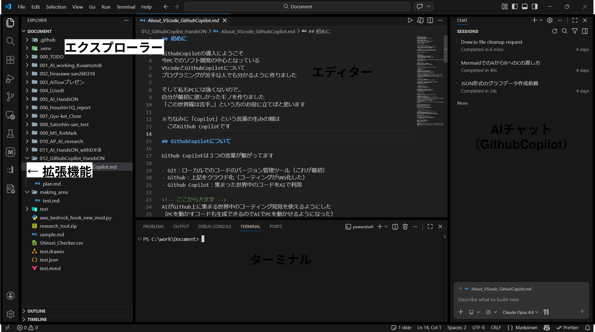
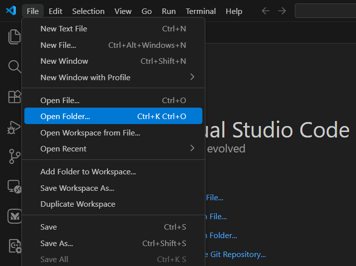
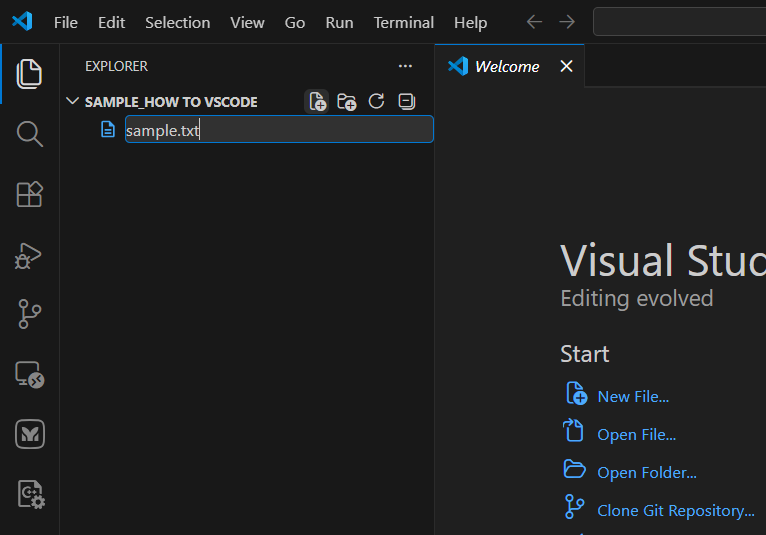
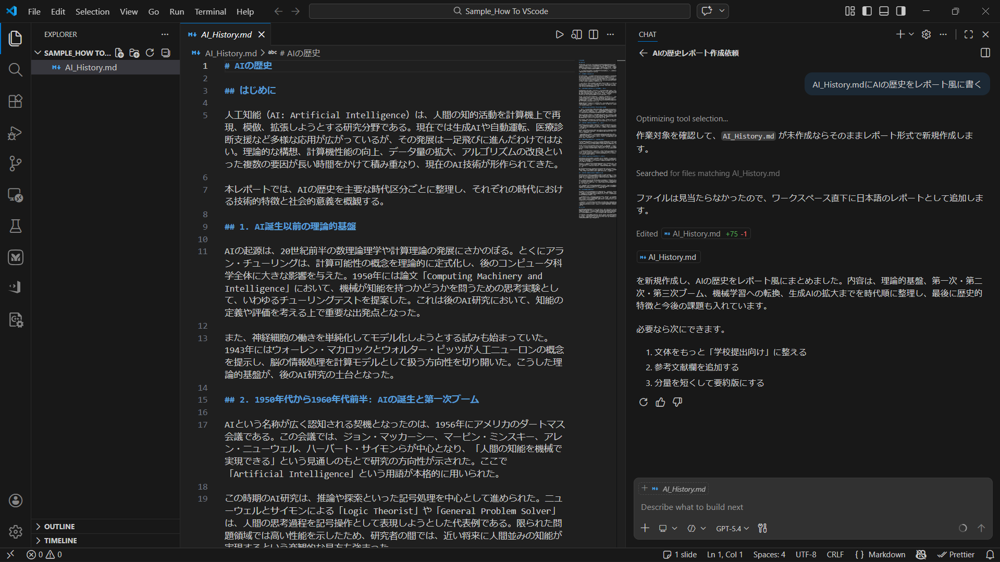

迷わない操作
フォルダー、ファイル、チャット、プレビューの位置が分かる。
プログラミング未経験でも大丈夫。VS Codeを開くところから、Markdown・図・Webレポートを完成させるところまで、手を動かしながら進みます。
1 # AIの歴史 2 3 人工知能の歩みを、 4 重要な転換点からたどります。 5 6 ## 1950年代 — はじまり
フォルダー、ファイル、チャット、プレビューの位置が分かる。
Markdown原稿、Mermaid図、HTMLレポートを自分で作れる。
AIの提案を確認し、機密・実行・品質のリスクを判断できる。
道具をそろえて、Copilotと会話できる状態にします。
社外秘・個人情報・認証情報を入力してよい環境か、組織のCopilotポリシーを先に確認してください。
VS Codeは、ファイル編集・AIとの会話・実行結果の確認が一つにまとまった作業机です。

作業フォルダーとファイルの一覧。Copilotが参照する範囲の起点です。
文章やコードを書く中央の領域。タブで複数ファイルを切り替えます。
コマンドを実行する場所。分からないコマンドは実行前に意味を確認します。
質問、編集、複数手順の依頼をする相棒。対象ファイルを明示すると正確です。
ファイル → フォルダーを開くから、空の「copilot-hands-on」フォルダーを選択します。

エクスプローラーの新規ファイルボタンから AI_History.md を作成します。

依頼の大きさに合わせて、会話と自律作業を使い分けます。表示名はバージョンや組織設定で変わることがあります。
質問、説明、アイデア出し。まず相談したいとき。
このフォルダーの構成を説明して選んだファイルへ具体的な変更を加えたいとき。
見出しを読みやすく直して複数ファイルの作成・修正・確認を一連で進めたいとき。
レポート一式を作成して確認して例：「AIの歴史を伝えるため、AI_History.mdに、初学者向け・5章構成で、3分で読める原稿を書いて」
1つの原稿から、図とWebレポートへ展開します。各プロンプトはそのままコピーできます。
AgentまたはEditで次の依頼を送ります。提案された変更は差分を見てから承認してください。
AI_History.md に「AIの歴史」を初学者向けのレポートとして書いてください。 条件: - 1950年代から現在までを5つの時代に分ける - 各時代に「年」「主な出来事」「社会への影響」を含める - 専門用語には短い説明を添える - 冒頭に3行の要約、最後に学びのポイントを3つ入れる - 日本語で、3分程度で読める分量にする

コードで管理できる図なら、AIが後から修正しやすくなります。
AI_History.md の内容をもとに、AIの発展を5段階で示す Mermaid の timeline 図を作り、本文の要約直後に追加してください。 条件: - 各段階は短い見出しと2つまでの出来事にする - 日本語のラベルを使う - Mermaidコードブロックの構文エラーがないか確認する
Draw.io Integrationを使い、.drawio 形式で作成する方法もあります。元教材の編集可能なサンプルも収録しています。
原稿を残したまま、閲覧用の洗練された1ページレポートを作ります。
AI_History.md をもとに AI_History.html を新規作成してください。 完成条件: - HTML / CSS / JavaScript を1ファイルにまとめる - 明るく読みやすい、レスポンシブなレポートデザイン - 年表、要点カード、まとめを視覚的に整理する - 見出し階層、配色コントラスト、キーボード操作に配慮する - 外部ライブラリなしでブラウザーから直接開ける - 元のMarkdownの情報を省略しない

同じGitHub Copilotでも、設計検討、文書処理、計測解析では使い方が変わります。動画の画面遷移を読み解き、共通する成功パターンまで整理しました。
重要なのは「一度で正解を出させる」ことではなく、判断基準を与え、出力を確認し、指摘をプロンプトやSkillへ戻すことです。
GitHub Copilotを用いたDRBFM作成紹介 · 17分47秒

対象部品、材料・構造の変更、変更理由、参照ナレッジ。
派生変化点、故障モード、故障メカニズム、原因、影響、対策を整理。
AI出力を人が確認し、足りない観点を指摘してプロンプトを改善。
レビューしやすい粒度・順番に整え、Excelワークシートへ出力。
PDFからテキスト抽出する紹介動画 · 12分54秒

レイアウト、画像品質、改行、表記が一定でない帳票群。
欲しい列、対象範囲、正規化、除外条件、出力形式を先に整理。
PDF解析、文字整形、表抽出、Excel出力を行うコードをCopilotが作成。
抽出結果とログを確認し、再実行可能な処理として残す。
Panel, INCAデータ解析エージェント · 9分34秒

Panel／INCA計測値、DTC、A2L・MAP、テーマと対象現象。
候補ファイルを整理し、対象を選び、必要な専門Skillへ仕事を渡す。
時間窓、ON率、相関、信号定義、コード経路を根拠として評価。
事実、推定メカニズム、ソースリンク、確信度をMarkdown／HTML化。
.github/agentsに進行役、.github/skillsに専門解析手順を分離SharePoint／OneDriveの閲覧権限付きURLをこの端末にだけ保存できます。URLはGitHubへ送信されません。
Copilotは優秀な共同作業者ですが、最終判断と説明責任は人にあります。
意味が分からない操作、許可外ソフトの導入、未知のURLへの送信を求められたら、承認せず担当者へ確認。
最初は、正解を自分で確認しやすい小さな仕事から始めるのが近道です。
メモからMarkdown原稿、HTMLレポート、FAQを作る。
CSVの欠損確認、集計、グラフ化の手順を作る。
定型作業をボタン1つにするHTMLツールを試作する。
「何を作るか」に合う拡張子を選ぶだけで、Copilotへの依頼が伝わりやすくなります。
.md原稿、手順書、README.html .css .jsレポート、画面、動くツール.csv .json表形式、設定、データ交換.py .ps1集計、変換、繰り返し処理.mmd .drawioフロー、構成図、年表13項目をすべてチェックすると完了になります。次は、今日の作り方を自分の小さな業務課題に置き換えてみましょう。